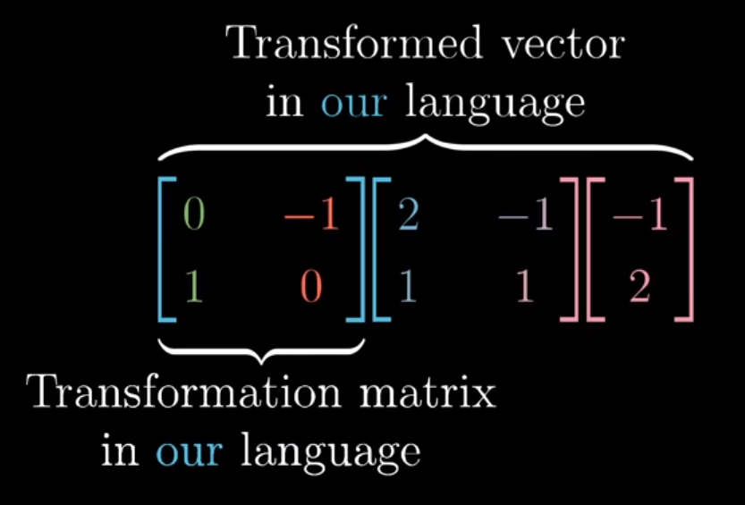
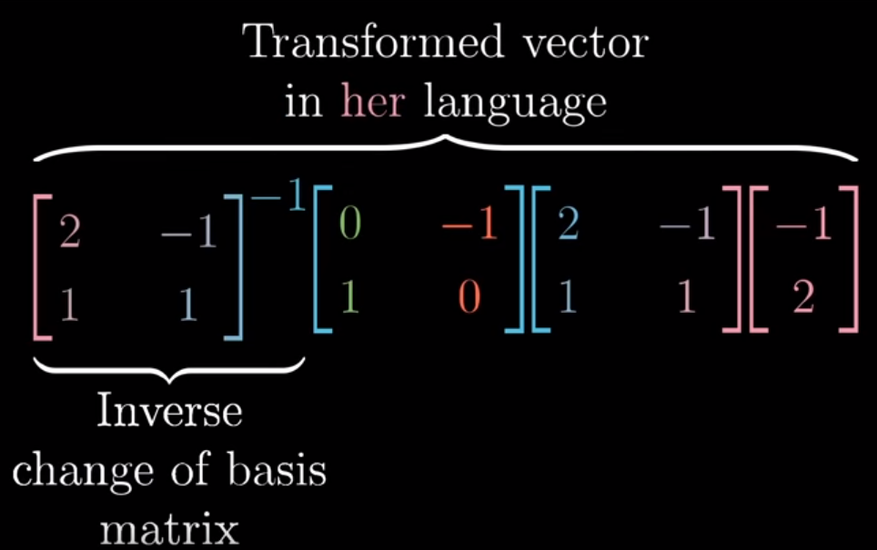

Change of Basis
Overview
Another Linear Algebra concept, another link to a great 3blue1brown video.
As we sort of teased out in our “Duality” section of our notebook on Dot Products, the orientation with which we perceive points in space is arbitrary, so long as our origin points, (0, 0), overlap.
Up to this point, we’ve always considered linear transformations with respect to how they manipulate our basis vectors i and j.
However in the example below, our colleague uses two different vectors b1 and b2 to orient themselves in space. Not only do these two meet at a skewed angle, they also have different unit lengths.
Nevertheless, both of our basis definitions are perfectly valid. Communicating the effect of a Linear Transformation that makes sense on one basis requires a bit of translation to the other.
from IPython.display import Image
Image('images/bases.PNG')
Indeed, as we talked about in our notebook on Linear Transformations, we can assemble complicated transformations as a chained set of simpler transformations Mn * ... * M1.
In the example above, we need to orient ourselves to match Pink’s basis space. Before we can find our representation of the point they called [-1 2]T, we first had to translate our basis vectors i and j to match Pink’s definition. We did this with the matrix
2 -1
1 1
From here, we were able to plug and chug and come up with [-4 1]T.
Change of Basis
More generally though, the matrix that we used to transform our basis i, j to Pink’s is called the Change of Basis matrix.
It allows us to map points on our grid to some other space. Or to borrow 3b1b’s verbiage, if Pink gives us a point in their space, we use the Change of Basis matrix to describe that same vector in our language
Image('images/translation_1.PNG')
Then if we wanted to apply some sort of transformation that we schemed up in our vanilla, i/j space, we can readily apply it to this product, because it’s defined in our basis.
For instance, a 90 degree rotation is pretty easy to cook up in our space
Image('images/translation_2.PNG')
At this point, Pink gave us a vector in her space, we decoded it to ours, and applied our transformation.
Finally, explaining to Pink where their original vector [-1 2]T wound up involves applying the inverse of the Change of Basis matrix.
Image('images/translation_3.PNG')
In general, if A is our Change of Basis matrix and M is some transformation written in our space, then the form A^-1 * M * A allows for a sort of “Mathematical Empathy,” as 3b1b puts it. I rather like that.